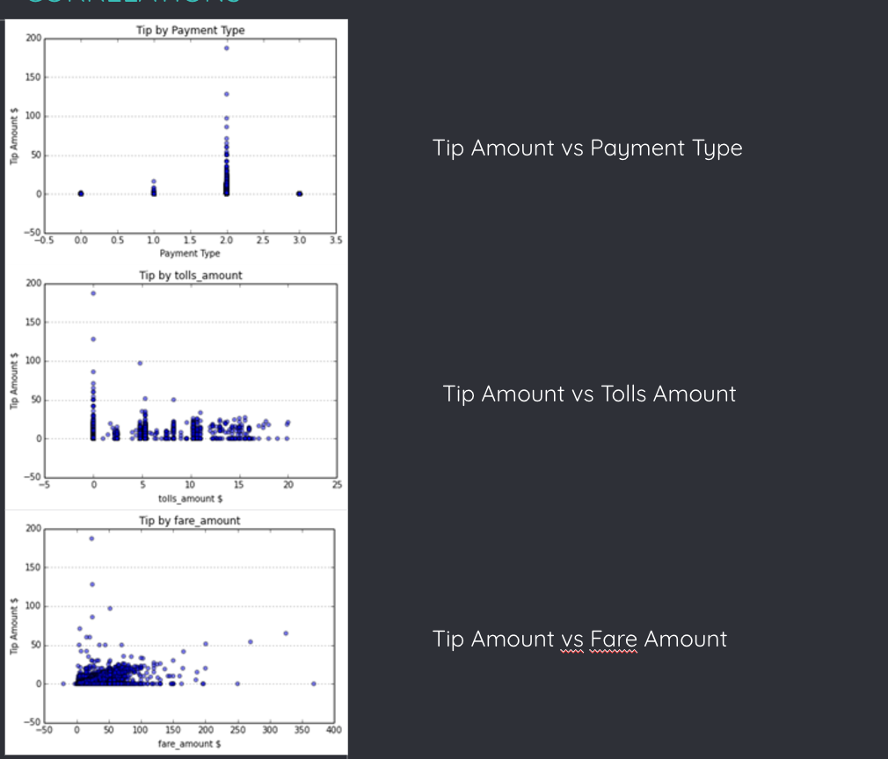

ABDELLAH MADANE
Etudiant en troisième année de l'école des sciences de l'information et Futur ingénieur de données et de connaissances, je suis intéressé par le domaine de la data science, en particulier l'intersection entre data science et le monde du business, autrement dit comment peut-on apporter des solutions concrètes permettant de résoudre des problèmes spécifiques en faisant parler des données. Au cours de ma formation et mes différentes expériences professionnelles, j’ai acquis des atouts en termes d’étude de besoins, de collecte et prétraitement des données, d’élaboration de modèles de Machine Learning et Deep Learning, ainsi que de reporting. J'ai pu donc développer des compétences analytiques étendues, ainsi que développer ma capacité à travailler en équipe et à collaborer avec les autres. A part cela, je suis un passionné de la musique, en effet, je joue du violon depuis 6 ans environ au conservatoire de la gendarmerie royale.
Mes Qualités
Je suis une personne autonome.
Je sais comment me débrouiller tout seul
Si j'ai affaire à une tâche que je n'ai jamais réalisée ou que j'ignore carrément, alors cela ne m’intimide pas, j’essaie de m'organiser et m'autoformer afin d'acquérir les connaissances nécessaires pour réaliser le travail demandé.
Par exemple, durant mon stage ingénieur, il y avait malheureusement le confinement. Du coup, stage à distance, et le contact se faisait rare, juste une fois par semaine pour suivre l’avancée du projet sur lequel je travaillais. Et comme on étudie le module de la BI jusqu’en 3ème année, j’étais alors obligé de recourir à des moyens par moi-même, que ce soit des MOOCS, des cours en ligne sur Udemy, coursera, des vidéos YouTube, des livres, etc. pour apprendre comment manipuler les outils et réaliser les différentes tâches du projet. Chose que j’ai réussi à faire en présentant un travail de qualité qui a plu à mon tuteur.
Je suis une personne dynamique et qui cherche toujours à aller de l’avant. J’ai tendance à prendre l’initiative.
En effet, lors du stage à la FMEF, on avait convenu au début d’utiliser l’outil Dspace, qui est un outil dédié à la mise en place de plateforme de stockage, gestion, et diffusion du contenu digital d’une organisation quelconque. Après, j’ai eu l’occasion de discuter avec un expert dans le domaine du content management, on a parlé du projet et il m’a conseillé d’opter pour une solution du cloud, vu les différents avantages qu’elle présente. J’ai réalisé alors un benchmarking entre les différents solutions cloud présents sur le marché, et je les ai comparés avec Dspace. J’ai conclu qu’ils étaient meilleurs. J’ai présenté les résultats à la direction, et ça leur a plu puisque ça répondait non seulement au besoin de stockage, gestion et diffusion ; mais aussi à un besoin non exprimé qui était d’avoir un espace de travail collaboratif.
Mes Points d’amélioration
Dans le passé, la prise de parole en public était un énorme défi pour moi. J’avais du mal à gérer le trac quand je savais que je devais me lever et parler devant une audience de plusieurs personnes. Mais je me suis rendu compte que cela entravait ma progression en tant qu'individu et en tant que professionnel, alors j'ai décidé d'agir. Je me suis inscris dans une formation à l’institut français qui portait sur la prise de parole en public. Aussi, j’ai participé à des ateliers de théâtres, c’était vraiment une expérience très riche en termes d’apprentissage et surtout de développement personnel. Aujourd’hui, je fais parti du club great debaters de l’esi. On organise des sessions où on se rassemble dans l’amphi et on se fixe un thème, puis à tour de rôle, chacun de nous se présente devant tout le monde et parle du sujet en question.
Experiences Professionnelles
Fondation Marocaine de l'Éducation Financière
DResponsable de projet / Développeur
● Mise en place d’une plateforme pour le stockage, la gestion, et la diffusion du contenu numérique de la FMEF.
● Traitement intellectuel des documents.
Outils utilisés: Dspace, Java, PostgreSQL, HTML5, CSS, Bootstrap 4, Javascript.
Caisse de Dépôt et de Gestion
Ingénieur Business Intelligence
● Implémentation d’une solution technique pour le pilotage des projets de la CDG.
➢ Analyse du besoin et compréhension de la problématique.
➢ Conception et implémentation de la Data Warehouse.
➢ Développement des flux (ETL) d’alimentation de la Datawarehouse.
➢ Création et Mise en place de cube OLAP.
➢ Elaboration de rapports et Tableau de Bords.
Outils utilisés: SSIS, SSAS, Power BI, SQL Server 2019, Visual Studio 2019.
Ministère de l’Économie et des Finances
Développeur Full stack
● Développement d'une application Web pour la
génération dynamique d'enquête.
● Visualisation des données collectées à travers
des rapports générés automatiquement par
l’application.
Outils utilisés: ASP NET MVC 5, SQL Server 2014, PowerDesigner, HTML5, CSS, Javascript.
Parcours Académique

École des Sciences de l’Information
• Data Science
• Big data
• Intelligence Artificialle
• Machine Learning
• Business intelligence
• Knowledge Management
CPGE Ibn Ghazi
• Mathématiques avancées
• Physiques & Chimie
• Informatique
• Sciences de l'ingénieur
Lycée Moulay Youssef
• Mathématiques
• Physiques & Chimie
• Sciences de l'ingénieur
Compétences
- Maitrise de python et ses différents bibliothèques utilisées dans l’analyse de données et en Maching learning/ Deep learning (scikit-learn, numpy, pandas …). Voir Section Projets.
- Analyse d’une base de données contenant des données sur un ensemble de personnes atteintes de « Hépatite B » et de maladies cardiaques, en utilisant R.
- Programmation d’un système de gestion de clients d’une banque avec Java.
- Scrapping d'une base de données avec Python et BeautifulSoup
- Développement d’une application web (front end et back end) pour la gestion de commandes de client avec Flask le Framework de développement web en Python.
- Développement d'une application web (front end et back end) pour la génération automatique de sondages en utilisant Asp.net MVC.
- Développement de ce e-portfolio avec principalement Html, Css, JavaScript, Bootstrap.
- Développement d'une application Android en utilisant Android Studio, Java, FireBase.
- Manipulation de différents systèmes de gestion de bases de données: Oracles 11g, SQL Server 2019, Microsoft Access.
- Maîtrise du langage SQL et de PLSQL.
- Elaboration du modèle Conceptuel et Physique des bases de données utilisées dans les différents projets de développements réalisés, en utilisant PowerDesigner.
- Etude du besoin de plusieurs problématiques en utilisant UML, que ce soit pour les projets réalisés ou autres.
- Projets de la FMEF réalisé en utilisant le framework Agile Scrum.
- Connaissances des différents pratiques et standards de management de projets de PMBOK.
- Certifié Scrum Master (voir section certificats).
- Analyse d'une base de données de deux centrales électiques distinctes et les données météorologiques correspondantes. Le but était d'identifier les dysfonctionnements du matériel, d'optimiser la génération d'électrecité, et de prédire l'éléctrécité produite pour chaque centrale.
- Classification des émotions faciales en utilisant différents modèles de Deep Learning (CNN, Resnet50, InceptionResnetV2, Vgg13)
- Développement d'un chatbot intelligent en utilisant un modèle CNN de deep Learning, la libraire NLTK pour le traitement de langage, ainsi que flask pour interroger le chatbot à travers Messenger d'une page Facebook.
- Malgré les différents projets que j'ai effectué en Deep Learning, j'ai besoin de mener un projet sur une étude de cas réelle afin de s'assurer de l'exactitude des résultats obtenues de manière plus concrète.
- J'ai des connaissances en Big Data, notamment l'utilisation de Hadoop et Spark, mais j'ai besoin d'y mener des projets afin d'affûter ces compétences.
Projets Réalisés
Que ce soit les projets académiques ou personnels que j'ai réalisés, cela m'a bien aidé à apprendre de nouvelles compétences et à aiguiser celles déjà acquises. Plusieurs domaines ont fait l'objets de ces projets, principalement ceux tournant autour de la Data science, notamment : Analyse de données, Visualisation des données, et la construction de modèles pour la prédiction et la classification avec du Machine Learning et Deep Learning.
Au-dessous, vous trouverez le résumé de quelques projets que j'ai effectués dans ce sens.
Projet: NYCE Taxi
L'objectif général de ce projet était de développer un algorithme qui peut être utilisé pour analyser le schéma de fonctionnement des taxis dans une ville afin d'essayer de prédire le pourboire que l'on peut attendre par trajet.
The Greentech challenge
The GreenTech challenge est un concours Dataviz lancé par le ministère français de l'environnement qui a eu lieu en 2017.
Projet: Data science
L'objectif de ce projet est d'illustrer les concepts à l'aide de données provenant de 30 saisons du jeu télévisé Jeopardy, à travers une analyse exploratoire des données et des visualisations intéractives.
Certificats Obtenus
-
Scrum Foundation Professional Certificate(SFPC) - CertiProf.
Voir la référence -
Machine Learning - Stanford University.
Voir la référence - 1 st Machine Learning for Business Professionals - Google Cloud Voir la référence

NYCe Taxi
CONCEPT
L'objectif général de ce projet était de développer un algorithme qui peut être utilisé pour analyser le schéma de fonctionnement des taxis dans une ville afin d'essayer de prédire le pourboire que l'on peut attendre par trajet. L'idée de ce projet était basée sur l'hypothèse que l'historique des déplacements des chauffeurs de taxi, combiné aux données démographiques sur le modèle, permettait de modéliser les habitudes en matière de pourboires des personnes à différents endroits, à différents moments et pour différents types de déplacements. En utilisant différentes techniques d'apprentissage automatique, nous voulions mettre au point un système permettant d'affecter un trajet donné à des classes spécifiques désignant les montants des pourboires.
DONNEES
L'ensemble de données a été obtenu auprès de la New York City Taxi and Limousine Commission (NYCT&L). Il couvre quatre années d'exploitation des taxis à New York et comprend 697 622 444 trajets.
Source de l'ensemble de données : http://publish.illinois.edu/dbwork/open-data/
Les données se composent de deux parties : les données sur les trajets, qui contiennent des informations sur les trajets, telles que la date et l'heure de la prise en charge, la distance et la durée du trajet, et les données sur les tarifs, qui contiennent des informations sur les prix, telles que le montant du tarif, le montant du pourboire, etc.
Nous avions des informations de latitude et de longitude dans nos données de voyage. Nous voulions obtenir des informations sur les caractéristiques du lieu comme l'aisance, le coût de la vie, etc. Notre plan initial était de diviser notre latitude et notre longitude en différents arrondissements. Mais comme les arrondissements s'étendent sur une grande surface, nous avons décidé de choisir des codes postaux. Nous avons trouvé des données ouvertes avec des codes postaux et la paire latitude-longitude pour le centre de ce code postal. Nous avons également gratté un site web pour obtenir les informations démographiques d'un code postal. Nous avons réuni ces ensembles de données et ajouté les attributs relatifs aux informations démographiques à notre ensemble de données fusionnées sur les tarifs des voyages.
APPROCHE SUIVIE
Comme mentionné précédemment, l'ensemble de données est constitué de données sur les voyages et les tarifs. Nos idées initiales étaient de prévoir les heures de pointe en ville et de prévoir le trafic à différents moments en fonction de la vitesse moyenne. Après une analyse et une discussion plus approfondies, nous avons conclu que ces énoncés de problèmes sont de bons projets de visualisation et nous nous sommes penchés sur des énoncés de problèmes davantage basés sur l'apprentissage machine.
Prévision du temps d'attente
Notre approche suivante consistait à prévoir le temps d'attente - le temps que doit attendre un chauffeur de taxi entre deux trajets. L'ensemble de données ne contient pas explicitement les temps d'attente. Nous aurions dû déduire les temps d'attente entre les trajets à partir des temps de prise en charge et de dépose et des informations sur le nombre de passagers. Nous avons effectué ces opérations et nous avons découvert que le temps d'attente était nul à 98% dans l'ensemble de données et que le reste était d'environ une minute en moyenne. Comme les données étaient très faussées et que le problème du temps d'attente prévisible n'avait pas beaucoup d'importance pratique, nous avons décidé d'explorer l'ensemble de données sous un angle légèrement différent. Nous avons constaté que notre analyse précédente pouvait être mise à profit pour essayer de résoudre un autre problème difficile, celui de la prédiction des pourboires.
Prévision du montant du pourboire
Nous voulions prédire le montant du pourboire qu'un conducteur est susceptible de recevoir.
Comme nous avons constaté que les données étaient faussées pour les temps d'attente, nous voulions confirmer que ce n'était pas le cas pour les montants des pourboires. Nous avons constaté que 50 % des données ne donnaient aucun pourboire. Nous étions donc en sécurité. Notre approche générique consistait à visualiser les données pour mieux les comprendre. Cela nous donnerait des informations sur les valeurs aberrantes et incorrectes (valeurs absurdes) qui doivent être supprimées. Outre le nettoyage des données, l'autre aspect important des visualisations est la corrélation que nous pouvons établir entre les différents attributs et le montant du pourboire.
ALGORITHMS UTILISES
Afin d'analyser les données et d'en tirer des enseignements, nous avons suivi un processus qui a consisté à examiner les données à l'aide des visualisations suivantes :
-
Modèles de Classification
- Support Vector Machines
- Decision Trees
- Random Forests
- Adaboost
-
Modèles de Regression
- Linear Regression
- SVM Regression
- Lasso Regression

Visualisations
Corrélations

Confusion Matrice
The Greentech challenge

Étude sur la pollution de l'eau pour le ministère français de l'environnement.
Description
Le GreenTech challenge est un concours Dataviz lancé par le ministère français de l'environnement qui a eu lieu en 2017. Un vaste ensemble de données concernant les pesticides en France a été publié, et le but était de construire des visualisations innovantes pour sensibiliser et informer les citoyens sur la situation française au cours des six dernières années.
Nous avons décidé de former une équipe de 4 amis et avons construit une Application qui permet d'explorer efficacement cet ensemble de données. L'application est composée de plusieurs fiches, chacune ciblant un thème spécifique. Cet outil doit vous permettre de comprendre ce qui se passe dans votre quartier et dans l'ensemble du pays. Il est également étudié pour améliorer vos connaissances générales sur les pesticides.
Plus de détails
Veuillez me contacter abdellahmadane07@gmail.com pour plus d'informations et le code source du projet.
Réalisé par Abdellah Madane.